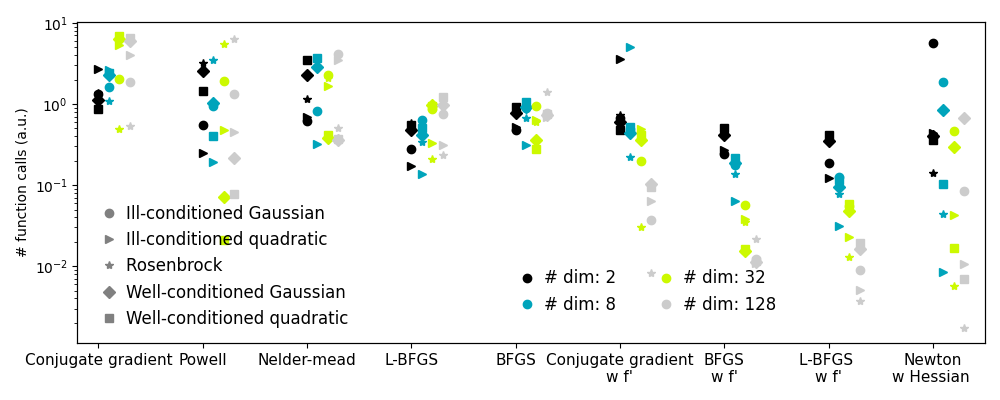

Note
Go to the end to download the full example code
2.7.4.9. Plotting the comparison of optimizers¶
Plots the results from the comparison of optimizers.
import pickle
import sys
import numpy as np
import matplotlib.pyplot as plt
results = pickle.load(
open(f"helper/compare_optimizers_py{sys.version_info[0]}.pkl", "rb")
)
n_methods = len(list(results.values())[0]["Rosenbrock "])
n_dims = len(results)
symbols = "o>*Ds"
plt.figure(1, figsize=(10, 4))
plt.clf()
colors = plt.cm.nipy_spectral(np.linspace(0, 1, n_dims))[:, :3]
method_names = list(list(results.values())[0]["Rosenbrock "].keys())
method_names.sort(key=lambda x: x[::-1], reverse=True)
for n_dim_index, ((n_dim, n_dim_bench), color) in enumerate(
zip(sorted(results.items()), colors)
):
for (cost_name, cost_bench), symbol in zip(sorted(n_dim_bench.items()), symbols):
for (
method_index,
method_name,
) in enumerate(method_names):
this_bench = cost_bench[method_name]
bench = np.mean(this_bench)
plt.semilogy(
[
method_index + 0.1 * n_dim_index,
],
[
bench,
],
marker=symbol,
color=color,
)
# Create a legend for the problem type
for cost_name, symbol in zip(sorted(n_dim_bench.keys()), symbols):
plt.semilogy(
[
-10,
],
[
0,
],
symbol,
color=".5",
label=cost_name,
)
plt.xticks(np.arange(n_methods), method_names, size=11)
plt.xlim(-0.2, n_methods - 0.5)
plt.legend(loc="best", numpoints=1, handletextpad=0, prop={"size": 12}, frameon=False)
plt.ylabel("# function calls (a.u.)")
# Create a second legend for the problem dimensionality
plt.twinx()
for n_dim, color in zip(sorted(results.keys()), colors):
plt.plot(
[
-10,
],
[
0,
],
"o",
color=color,
label="# dim: %i" % n_dim,
)
plt.legend(
loc=(0.47, 0.07),
numpoints=1,
handletextpad=0,
prop={"size": 12},
frameon=False,
ncol=2,
)
plt.xlim(-0.2, n_methods - 0.5)
plt.xticks(np.arange(n_methods), method_names)
plt.yticks(())
plt.tight_layout()
plt.show()
Total running time of the script: (0 minutes 0.548 seconds)